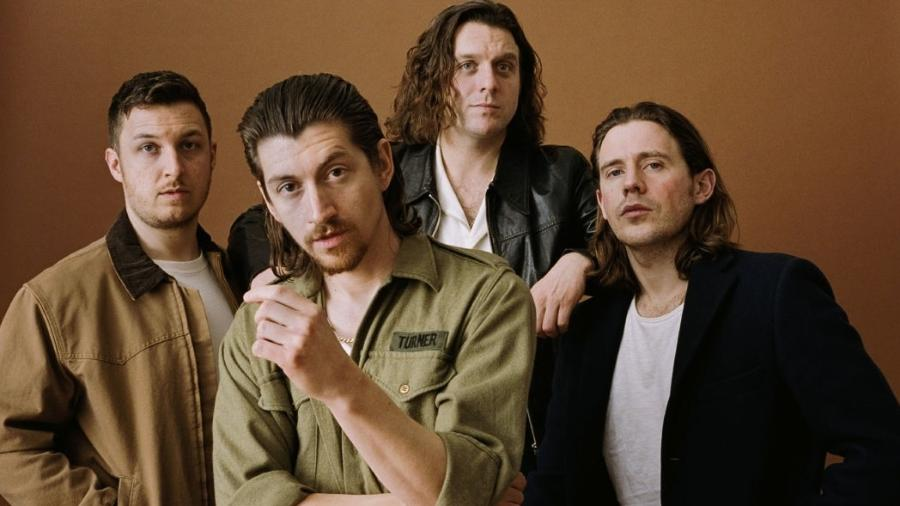

Arctic Monkeys (AM)
Generos:

Biografia de Arctic Monkeys
A banda Arctic Monkeys é uma renomada banda de rock britânica formada em Sheffield, Inglaterra, em 2002. Seu álbum de estreia, "Whatever People Say I Am, That's What I'm Not" (2006), tornou-se um sucesso instantâneo e quebrou recordes de vendas. Eles continuaram a produzir álbuns bem-sucedidos, como "Favourite Worst Nightmare" (2007), "AM" (2013), e "Tranquility Base Hotel & Casino" (2018). A banda é conhecida por sua evolução musical, passando de um som indie rock cru para um estilo mais maduro e experimental ao longo de sua carreira. Arctic Monkeys é considerada uma das bandas mais influentes do século XXI.Linha do tempo
2002-2003: Formação da Banda A banda Arctic Monkeys foi formada
em Sheffield, Inglaterra, por Alex Turner (vocais e guitarra), Jamie Cook
(guitarra), Andy Nicholson (baixo) e Matt Helders (bateria).
2005: Álbum de Estreia Em janeiro, a banda lança seu primeiro single, "I Bet You Look Good On The Dancefloor", que atinge o topo das paradas britânicas.
Em 23 de janeiro, lançam seu álbum de estreia, "Whatever People Say I Am, That's What I'm Not", que se torna o álbum de estreia mais vendido na história do Reino Unido
2006: Segundo Álbum Em abril, lançam seu segundo álbum, "Favourite Worst Nightmare", que também alcança grande sucesso.
2007-2009: Mudanças na Formação Andy Nicholson deixa a banda em 2006, sendo substituído por Nick O'Malley como baixista oficial.
Em 2009, lançam o álbum "Humbug", que marca uma mudança no estilo musical da banda, com influências mais pesadas e psicodélicas.
2011: "Suck It and See" A banda lança o álbum "Suck It and See", que marca um retorno a um som mais leve e melódico.
2013: "AM" Em setembro, lançam o álbum "AM", que se torna um grande sucesso internacional, incluindo hits como "Do I Wanna Know?" e "R U Mine?".
2018: "Tranquility Base Hotel & Casino" O Arctic Monkeys lança seu sexto álbum de estúdio, "Tranquility Base Hotel & Casino", que representa outra mudança significativa em seu som, com influências mais experimentais.
2021: "AM" Deluxe e Continuação Em 2021, lançam uma edição deluxe do álbum "AM", incluindo músicas adicionais e versões ao vivo.
Há especulações sobre um possível novo álbum, mas até ás última atualização em setembro de 2021, não havia informações oficiais sobre seu lançamento.
Se quiser saber mais sobre Arctic Monkeys, Clique Aqui